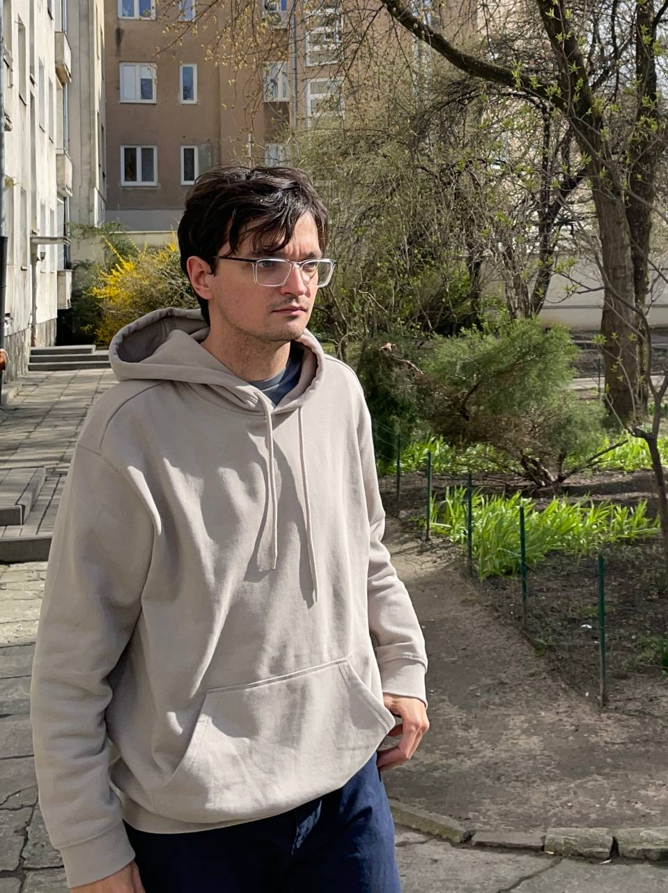

Rodion N. Déev (also spelt Rodion Deev)
I am a postdoc at IMPAN. My mentor is Prof. Michał Kapustka.
I received my Ph. D. at Courant Institute in April 2021. My advisor was Prof. Fedor Bogomolov.
CV (old; PDF, 83 kB)
my papers on arXiv and beyond:
- Compact fibrations with hyperkähler fibers (2015), arXiv:1511.05332, J. of Geo. & Phys., Vol. 123, Jan. 2018, pp. 372-378
- Cousin groups and Hodge structures (2016), arXiv:1610.06263
- Liouville—Arnold connection for Lefschetz—Kovalev pencils and Eells—Salamon CR twistors (PDF, 373 kB), in preparation
- Sections of Lagrangian fibrations on holomorphically symplectic manifolds and degenerate twistorial deformations (2020), joint w. Fedor Bogomolov and Misha Verbitsky, Advances in Mathematics, Volume 405, 27 August 2022, 108479
- Haupt–Kapovich theorem revisited (2020), my PhD thesis.
This site is under construction.